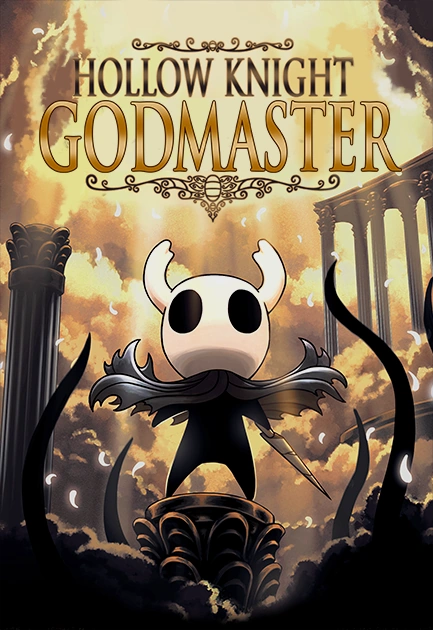

By: Danette Williams
What is it?
Hollow Knight is a popular indie video game developed by Team Cherry. It takes players on an adventure through a dark and beautiful underground kingdom called Hallownest. You play as a bug-like character called the Knight, exploring a vast interconnected world full of enemies, secrets, and challenging bosses.
The game has a hauntingly beautiful art style and a captivating soundtrack. It's known for its challenging gameplay, exploration, and immersive atmosphere. Hollow Knight has received widespread acclaim for its tight controls, intricate level design, and engaging story.
It's considered one of the best games in the Metroidvania genre.
Hollow Knight official website
DLCs
Hollow Knight comes with four free DLCs.
The Hidden Dreams DLC is an update that brings new bosses, music, a teleportation ability called Dream Gate, boss replays, and overall improvements to the game. It adds more challenges and content for players to explore in the atmospheric world of Hallownest.

The Lifeblood DLC expands the Hollow Knight experience by introducing new gameplay elements, challenging bosses, performance optimizations, bug fixes, and quality of life improvements. It enriches the overall gameplay experience, providing players with more content, improved performance, and a smoother journey through the haunting and mysterious world of Hallownest.

The Grimm Troupe is a DLC that adds a new questline, challenging boss battles, new Charms, and additional characters to the game. Players can uncover the story of the mysterious troupe and engage in intense battles while exploring the world of Hallownest. It offers new content and challenges for players to enjoy.

The Godhome DLC adds a new area called Godhome, where players can engage in challenging boss battles and face off against new foes. It introduces the Pantheon of Hallownest, a series of progressively difficult boss rush challenges. The DLC also includes new music, expands the game's lore, and brings various enhancements and improvements. It offers players exciting content and tests their combat skills in the mystical world of Hallownest.
Team Cherry
Team Cherry is an Austrailian team of 3 people.